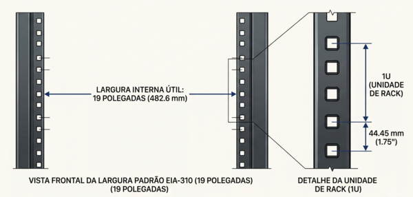
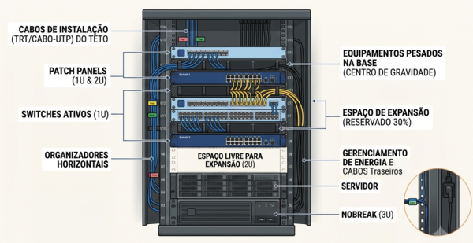
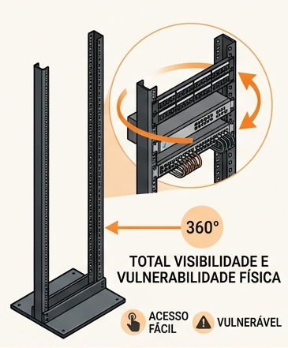
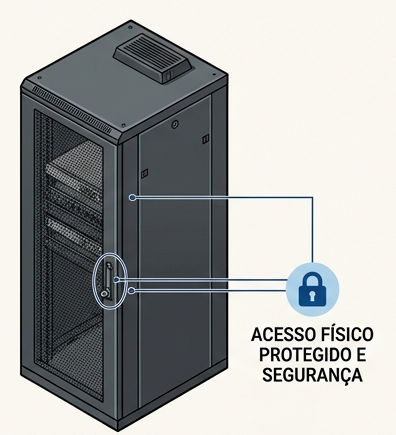
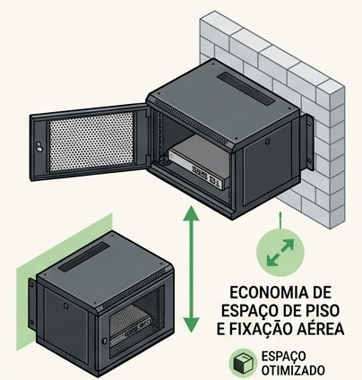
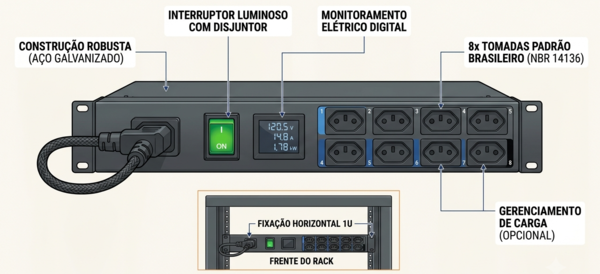

Infraestrutura Física de Redes
Aula 10 — Racks e Alimentação
Objetivo da aula: Compreender o conceito e a função dos racks na infraestrutura de redes, conhecer os tipos disponíveis e suas especificações básicas, entender a organização interna e os sistemas de alimentação e proteção elétrica.
1. O que é um Rack
O rack é o gabinete metálico padronizado que centraliza e organiza fisicamente todos os equipamentos ativos e passivos de uma infraestrutura de rede — switches, roteadores, patch panels, servidores, nobreaks e demais componentes.
Por que Centralizar Equipamentos num Rack
Antes dos racks se tornarem padrão, equipamentos de rede eram distribuídos pelo ambiente — switches sobre mesas, servidores no chão, cabos soltos. O resultado era desorganização, dificuldade de manutenção e risco de danos físicos aos equipamentos.
O rack resolve isso:
- Organização: todos os equipamentos num espaço definido, organizados verticalmente
- Segurança física: acesso restrito com fechadura, proteção contra contato acidental
- Gestão de cabos: espaço estruturado para roteamento e organização dos cabos
- Ventilação: projeto que favorece o fluxo de ar para resfriamento dos equipamentos
- Padronização: qualquer equipamento que siga o padrão EIA-310 pode ser instalado em qualquer rack compatível
Padrão EIA-310
- Largura interna útil: 19 polegadas (482,6 mm) — é por isso que racks são chamados de “racks 19 polegadas”
- Espaçamento dos furos de fixação: padrão que garante que qualquer equipamento de rack se encaixe em qualquer rack compatível
- Unidade de rack (U): a unidade de medida de altura dos equipamentos
Graças ao EIA-310, um switch da Cisco, um patch panel da Furukawa e um nobreak da APC podem todos ser instalados no mesmo rack sem adaptações.
2. Unidades de Rack (U)
A unidade de rack — abreviada como U — é a unidade de medida que define a altura dos equipamentos e dos racks.
1U = 44,45 mm (1,75 polegadas)
Todo equipamento para rack tem sua altura expressa em unidades U:

| Equipamento | Altura típica |
|---|---|
| Switch de 24 portas | 1U |
| Patch panel de 24 portas | 1U |
| Patch panel de 48 portas | 2U |
| Servidor 1U | 1U |
| Organizador de cabos horizontal | 1U |
| Nobreak pequeno | 2U a 3U |
| Nobreak grande | 4U a 8U |
Como Calcular o Espaço Necessário
Para dimensionar o rack de uma instalação, some a altura em U de todos os equipamentos previstos e adicione uma margem de crescimento:

Espaço de Folga
Nunca dimensionar um rack para ser ocupado 100%. As razões são práticas:
- Ventilação: equipamentos precisam de espaço para circulação de ar
- Gestão de cabos: espaço para organizar os cabos sem comprimi-los
- Expansão: toda instalação cresce — um rack cheio desde o início é um problema em breve
- Manutenção: espaço para manusear equipamentos sem remover outros
O recomendado é ocupar no máximo 70 a 80% da capacidade total do rack.
3. Tipos de Rack
Rack Aberto

O rack aberto é uma estrutura metálica sem laterais, portas ou teto — apenas os montantes verticais com os trilhos de fixação e algumas travessas horizontais de reforço.
Vantagens:
- Acesso irrestrito a todos os equipamentos de qualquer ângulo
- Melhor ventilação natural — sem barreiras ao fluxo de ar
- Custo menor que o rack fechado
- Mais fácil de instalar cabos e equipamentos
Limitações:
- Sem proteção física — qualquer pessoa pode tocar os equipamentos
- Sem proteção contra poeira e partículas
- Estética menos organizada — todos os cabos ficam expostos
Quando usar: ambientes com acesso restrito e controlado — salas de servidores fechadas, armários de telecomunicações com chave. Não recomendado em ambientes abertos ou com trânsito de pessoas não autorizadas.
Rack Fechado (Gabinete)

O rack fechado é um gabinete completo — com laterais, teto, base e portas frontais e traseiras com fechadura. Os equipamentos ficam completamente enclausurados.
Vantagens:
- Proteção física completa — acesso apenas com chave
- Proteção contra poeira
- Estética organizada — os cabos ficam internos
- Maior segurança em ambientes com acesso não controlado
Limitações:
- Custo maior
- Ventilação exige planejamento — sem ventiladores adequados, os equipamentos superaquecem
- Acesso mais trabalhoso para manutenção
Quando usar: ambientes com acesso não controlado, recepções, corredores, ambientes onde a segurança física é prioritária.
Armário de Parede (Wall Mount)

O armário de parede é um rack fechado compacto projetado para ser fixado diretamente na parede — sem ocupar espaço no piso.
Características:
- Profundidade reduzida (geralmente 300 a 450 mm)
- Capacidades comuns: 6U, 9U, 12U
- Abertura frontal com dobradiça — o painel frontal abre revelando os equipamentos
- Com ou sem fechadura
Quando usar: instalações pequenas com poucos equipamentos — escritórios de pequeno porte, salas de telecomunicações com espaço limitado, pontos de distribuição em andares de prédios onde um rack de piso não cabe.
Rack de Piso — Tamanhos Comuns
Racks de piso são os mais usados em instalações corporativas e data centers. Os tamanhos mais comuns:
| Tamanho | Uso típico |
|---|---|
| 12U | Instalações muito pequenas, home office profissional |
| 18U | Pequenas empresas, salas de telecomunicações de andar |
| 24U | Empresas de médio porte |
| 42U | Padrão para data centers e salas de servidores |
A profundidade dos racks de piso varia entre 600 mm e 1200 mm — deve ser compatível com a profundidade dos equipamentos instalados, especialmente servidores e nobreaks.
4. Organização Interna do Rack
A organização interna do rack afeta diretamente a facilidade de manutenção, a ventilação e a segurança da instalação. Existe uma ordem lógica recomendada para posicionar os equipamentos.
Ordem Recomendada dos Equipamentos
A organização do rack segue uma lógica de cima para baixo:
Patch panels no topo: os cabos de instalação que chegam ao rack são normalmente roteados pelo teto ou pela parte superior — terminá-los nos patch panels do topo reduz o percurso dos cabos e mantém a organização.
Switches logo abaixo dos patch panels: o patch cord que conecta o patch panel ao switch fica curto — geralmente 0,5 m a 1 m — mantendo a organização e sem cabos longos soltos.
Equipamentos pesados na base: servidores e nobreaks são os componentes mais pesados. Posicioná-los na base mantém o centro de gravidade baixo, reduzindo o risco de tombamento.
Espaço livre no meio: reservar espaço para expansão futura no meio do rack — não no topo nem na base, onde os equipamentos fixos geralmente ficam.
Organizadores de Cabos Horizontais e Verticais
Organizador horizontal (1U): instalado entre o patch panel e o switch. Possui anéis ou passadores por onde os patch cords são roteados horizontalmente antes de seguir para o switch. Evita que os patch cords caiam soltos na frente do rack.
Organizador vertical: instalado nas laterais internas do rack. Roteia os patch cords verticalmente ao longo do rack — especialmente útil quando o patch panel e o switch estão em posições distantes no rack.
Gestão de Cabos Dentro do Rack
Boas práticas introdutórias para gestão de cabos no rack:
- Usar patch cords do comprimento correto — nem muito curtos (que ficam tensos) nem muito longos (que ficam com excesso de cabo solto)
- Organizar os patch cords por grupos funcionais — cores diferentes para funções diferentes
- Fixar feixes de cabos com abraçadeiras de velcro — nunca nylon dentro do rack
- Deixar os cabos de energia separados dos cabos de dados — lados opostos do rack quando possível
- Manter o acesso traseiro do rack desobstruído — os cabos de instalação que chegam pelo fundo devem ser organizados para permitir manutenção
Etiquetagem de Equipamentos no Rack
Cada equipamento no rack deve ser identificado com etiqueta visível contendo no mínimo:
- Nome ou função do equipamento (ex: “Switch Andar 2”, “Patch Panel Sala A”)
- Endereço IP de gerência, quando aplicável
- Número de série ou patrimônio, em instalações que exigem controle de ativos
5. Alimentação e Proteção Elétrica
Os equipamentos de rede são equipamentos eletrônicos sensíveis — variações de tensão, picos elétricos e interrupções de energia podem danificá-los permanentemente ou causar perda de dados. A proteção elétrica é parte integrante da infraestrutura de rede.
Régua de Tomadas para Rack (PDU)

A PDU (Power Distribution Unit) é a régua de tomadas projetada para instalação em rack. Diferente de uma régua doméstica comum, a PDU para rack:
- É fixada verticalmente nas laterais internas do rack ou horizontalmente em 1U
- Possui tomadas no padrão adequado aos equipamentos de rack (geralmente NBR 14136 no Brasil)
- Tem capacidade de corrente adequada para alimentar múltiplos equipamentos simultaneamente
- Alguns modelos têm medição de consumo individual por tomada — útil para gestão de energia em data centers
Filtro de Linha
O filtro de linha protege os equipamentos contra picos de tensão (surtos elétricos) — variações bruscas e momentâneas na tensão da rede elétrica, causadas por raios, acionamento de motores e outros eventos.
O que o filtro de linha protege: picos de tensão de curta duração que podem danificar componentes eletrônicos.
O que o filtro de linha NÃO protege: quedas de energia, variações lentas de tensão (subtensão/sobretensão), oscilações prolongadas. Para essas situações, é necessário um nobreak.
Um filtro de linha não substitui um nobreak — são proteções complementares para problemas diferentes.
Nobreak (UPS)
O nobreak — também chamado de UPS (Uninterruptible Power Supply) — é o equipamento que garante alimentação contínua aos equipamentos de rede mesmo durante quedas de energia elétrica.
Como funciona: o nobreak mantém baterias internas permanentemente carregadas. Em caso de queda de energia, a eletrônica interna comuta automaticamente para as baterias em milissegundos — os equipamentos conectados não percebem a interrupção.
Funções do nobreak:
- Autonomia durante queda de energia: mantém os equipamentos funcionando por um tempo suficiente para encerramento ordenado ou até o retorno da energia
- Estabilização de tensão: corrige variações lentas de tensão (subtensão e sobretensão)
- Filtragem de ruído elétrico: filtra interferências na rede elétrica
- Proteção contra surtos: protege contra picos de tensão
Dimensionamento básico:
- Listar todos os equipamentos que serão conectados ao nobreak
- Somar a potência de cada um (em watts — geralmente indicada na etiqueta do equipamento)
- Multiplicar por 1,4 a 1,6 (fator de correção para potência aparente em VA)
- Escolher o nobreak com capacidade em VA igual ou superior ao valor calculado
- Verificar a autonomia oferecida com essa carga — quanto tempo o nobreak sustenta os equipamentos com as baterias
O dimensionamento detalhado de nobreaks será abordado na disciplina de Segurança do Trabalho e na disciplina de Cabeamento e Infraestrutura do próximo semestre.
6. Ambiente do Rack
O rack não existe isolado — ele precisa de um ambiente adequado para funcionar corretamente.
Temperatura e Ventilação
Equipamentos eletrônicos geram calor — switches, servidores e nobreaks dissipam energia na forma de calor para o ambiente. Sem ventilação adequada, a temperatura dentro do rack sobe e os equipamentos entram em proteção térmica (desligamento automático) ou têm sua vida útil reduzida drasticamente.
Princípio do fluxo de ar frio-quente: equipamentos de rack puxam ar frio pela frente e expelem ar quente pela traseira (ou pela parte superior). A organização do rack deve respeitar esse fluxo — nunca bloquear as entradas e saídas de ar dos equipamentos.
Temperatura recomendada: entre 18°C e 27°C no ambiente do rack. Acima de 35°C, o risco de falha dos equipamentos aumenta significativamente.
Em racks fechados, ventiladores ativos (instalados no teto do rack) podem ser necessários para expelir o ar quente — especialmente quando há alta densidade de equipamentos.
Organização do Espaço Físico
O rack deve ser posicionado com espaço suficiente para acesso frontal e traseiro:
- Frente: mínimo de 1 metro para abrir portas e manusear equipamentos e patch cords
- Traseira: mínimo de 0,8 metros para acesso aos cabos de instalação e cabos de energia
Em data centers, a organização em corredores quente/frio — onde fileiras de racks são posicionadas frente a frente (corredor frio, para entrada de ar) e costas com costas (corredor quente, para saída de ar) — é o padrão de eficiência energética.
Segurança Física
O rack concentra toda a infraestrutura crítica de rede — protegê-lo fisicamente é tão importante quanto protegê-lo eletricamente:
Rack com chave: racks fechados devem ter fechadura — a chave deve ser controlada e entregue apenas a pessoas autorizadas.
Sala de telecomunicações com acesso restrito: o ideal é que o rack fique numa sala dedicada, com acesso por chave ou controle biométrico, com registro de entrada e saída.
Sem equipamentos não identificados: qualquer equipamento instalado no rack deve ser identificado e registrado. Dispositivos desconhecidos num rack podem representar riscos de segurança.
 Exercícios de Fixação
Exercícios de Fixação